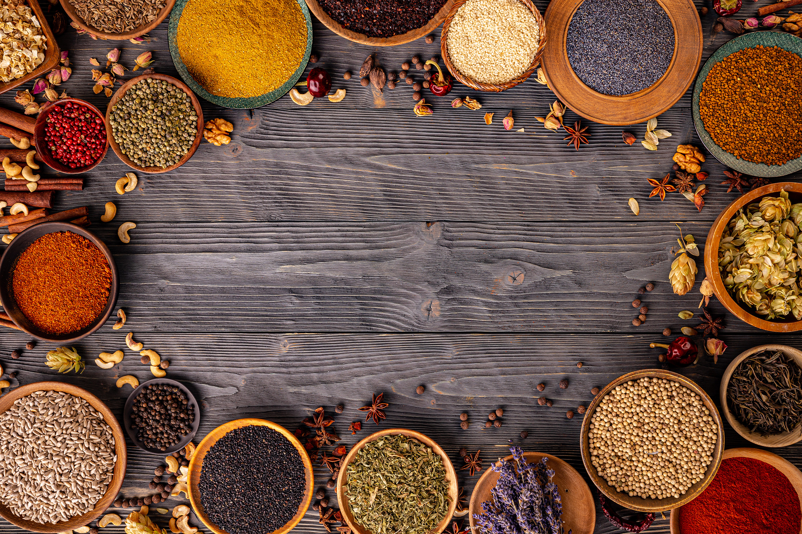
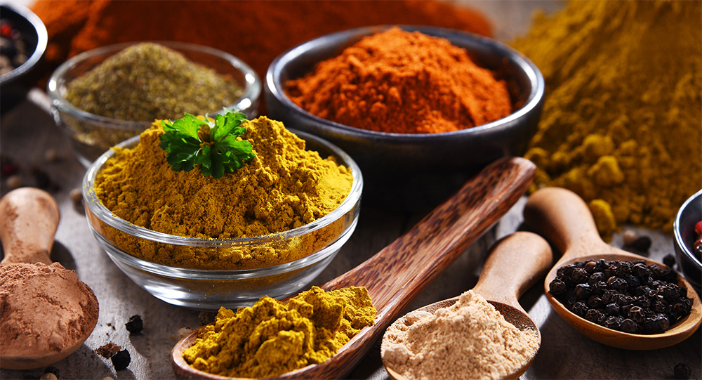
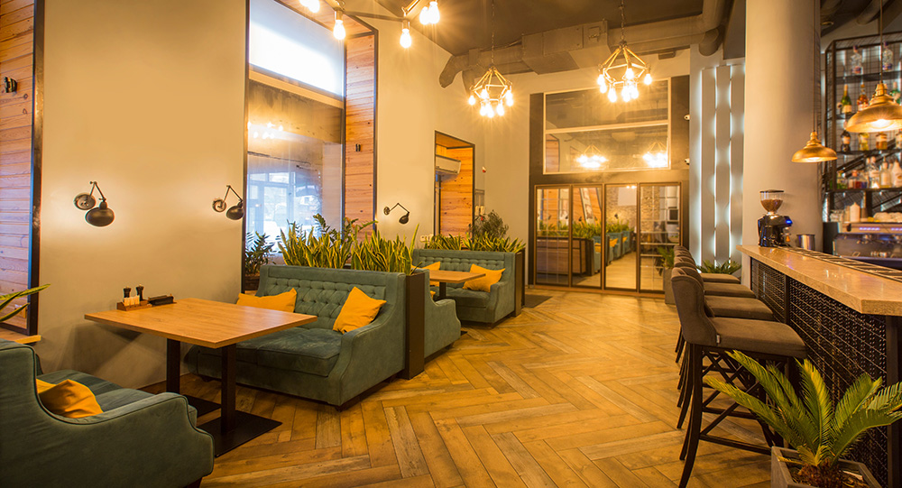
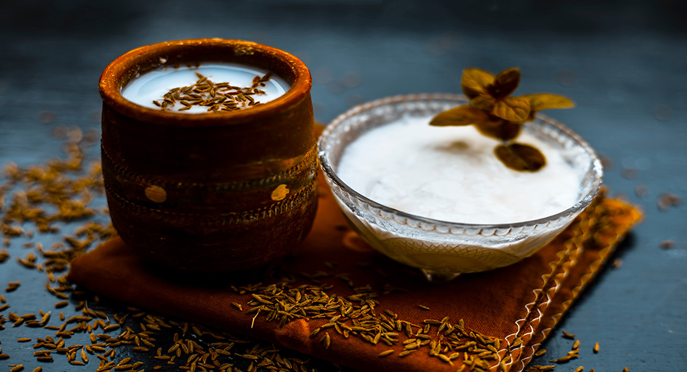

こだわり

厳選したスパイスを使用して作り上げた独自の風味が自慢です。豊かな香りと味わいが、食欲をそそります。一度食べたら忘れられない、奥深い味わいを提供します。

落ち着いた空間でお客様をお迎えいたします。木の温もりを感じるインテリアと柔らかな照明が、リラックスしたひとときを演出します。ゆったりとした席配置で、友人や家族との楽しい時間や、一人でのんびりと過ごす時間を大切にしていただけるよう工夫しています。

特製チャイもぜひお楽しみいただきたい一品です。チャイは、選び抜いた香り高い茶葉と、シナモンやカルダモンなどのスパイスを贅沢にブレンドして丁寧に煮出しています。このこだわりのチャイは、食後のひとときを一層豊かにしてくれることでしょう。
メニュー
カレーを知る
- 「カレー」は、インドで生まれ、その風味と魅力で世界中の食卓に広がった料理です。各国で愛されているカレーの特色や歴史を掘り下げ、世界中の人々がどのようにカレーを楽しんでいるのかをご紹介します。
- インドは「カレー発祥の地」として知られ、その歴史は数千年にわたります。インドでのカレーの起源と発展、そして宗教や気候がどのように料理に影響を与えてきたかを探ります。カレーの深い歴史とその魅力を紐解く旅へご案内します。
- インド料理の豊かな味わいを引き立てるために、飲み物は欠かせない存在です。「ラッシー」や「チャイ」、さらには地域ごとに異なる特産飲料を紹介します。それぞれの飲み物が持つ歴史や文化、そしてインド料理との絶妙な相性について掘り下げ、食事の楽しみをさらに広げるインドの飲み物の魅力をお届けします。
店舗情報
〒150-0041 東京都渋谷区神南１丁目１７
TEL03-9026-4786
営業時間 17:30～22:00（L.O21：30）